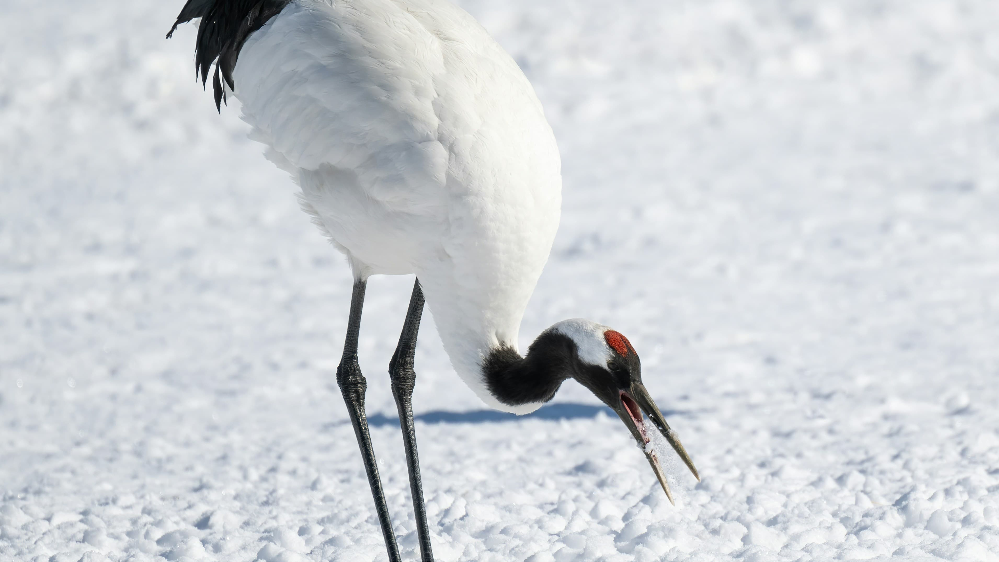

タンチョウ、35年ぶりに絶滅危惧種から除外
——33羽から1900羽へ、
人々の努力が実らせた奇跡の回復

今回の改訂で、タンチョウのカテゴリーはこれまでの「絶滅危惧Ⅱ類（絶滅の危険が増大している種）」から「準絶滅危惧（現時点での絶滅危険度は小さい）」へと1ランク下がりました。絶滅危惧種から外れるのは、1991年のリスト入りから実に35年ぶりのことです。
大正時代：「絶滅した」と思われていた
1924年：釧路地方で生存を再確認（再発見から今年で102年）
1952年：乱獲・湿原開発で 33羽 まで激減
1987年：鶴居・伊藤タンチョウサンクチュアリ開設
2004年：1,000羽 を突破
2026年1月：1,900羽超 を確認（過去最多水準）
タンチョウは全長140cm・体重10kg前後と国内最大級の野鳥で、頭のてっぺんが赤いことから「丹頂（丹=赤、頂=てっぺん）」の名がつきました。「鶴は千年」のことわざでも知られる縁起の良い鳥として日本人に親しまれてきましたが、江戸時代以降の乱獲と明治以降の湿原開発によって生息数が激減。大正時代にはいちど「絶滅」と思われた時期もありました。
| 項目 | 内容 |
|---|---|
| 生息地 | 北海道東部（釧路湿原など）。国内で繁殖する唯一のツル |
| 体の特徴 | 全長140cm・翼を広げると240cm・体重10kg前後 |
| 今回の変更 | 絶滅危惧Ⅱ類（VU）→ 準絶滅危惧（NT）に1ランク改善 |
| 現在の個体数 | 成鳥1,200羽程度（試算）・2026年1月調査で1,900羽超を確認 |
| 保護の主な取り組み | 冬期の給餌活動・繁殖地（湿原）の保全・野鳥保護区の設置（23か所・約2,800ha） |
回復の立役者のひとつが、北海道鶴居村の「鶴居・伊藤タンチョウサンクチュアリ」です。酪農家の故・伊藤良孝氏が1966年から個人でタンチョウへの給餌を始め、日本野鳥の会が1987年にその活動を引き継いでサンクチュアリとして整備しました。地道な給餌活動と繁殖地の保全が積み重なり、タンチョウが足場を取り戻していきました。今年は生存再確認から102年の節目の年でもあります。
なお、絶滅危惧種から外れたとはいえ「準絶滅危惧」という分類は、生息条件の変化によっては再び上位カテゴリーへ移行し得ることを意味します。現在も鳥インフルエンザの感染リスク、農業被害や交通事故、営巣地である湿原の開発など課題は残っており、環境省は引き続き状況を注視する方針です。
33羽から1900羽へ——数字だけ見れば単純な増加ですが、その背景には給餌を続けた農家、湿原の保護に動いた研究者、保護区の整備に尽くした人々の、何十年にもわたる地道な努力があります。タンチョウが北海道の空を舞う姿は、人と自然が力を合わせれば絶滅の淵から引き返せるという、静かで力強いメッセージです。